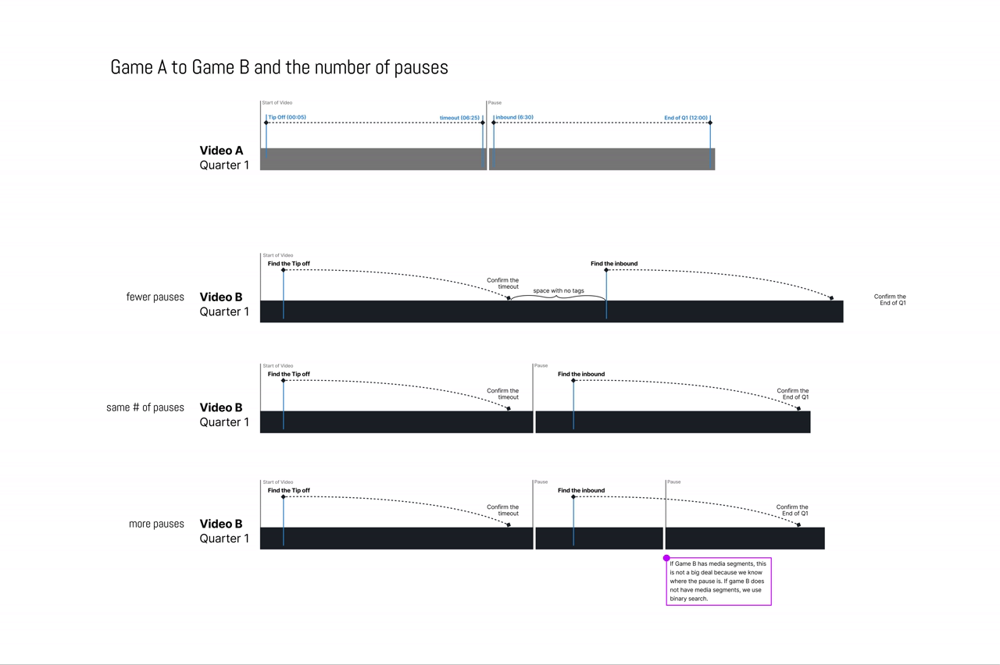

Featured case study · 3 parts
Merging a tangle of products into one
Several volleyball products folded into one. Too big for a single read, so it's told in three case studies that each stand on their own.
Hannah Monk
Featured case study · 3 parts
Several volleyball products folded into one. Too big for a single read, so it's told in three case studies that each stand on their own.
A skunkworks bet on AI search that turned into a real, shipped tool — and eight months of watching how people actually used it.

A math trick found in a video editor cut duplicate analyst work in half and saved $500K a year.
I’m a product designer who likes solving the messy problems behind the scenes — the workflows, systems, and information structures that make products work. I specialize in turning complex data and processes into experiences that help people find clarity and take action.
I love the kind of problems that don't have obvious answers, the ones that require curiosity, experimentation, and a lot of whiteboarding before the interface ever takes shape.